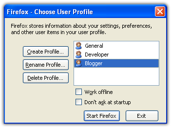

No environment variables unless - maybe - if we submit patches. (https://trac.torproject.org/projects/tor/ticket/25391)
In times of Tor Browser SocksSocket, why do localhost connections still work anyhow? Hasn’t TCP been removed from Tor Browser yet so it can only talk to Tor socks unix domain socket file?
I was wondering if tb-updater should support multiple installation folders. Technically the easiest to have fully separate tor-browser folders (copies). But that would also duplicate, triple or quadruple the used disk space. And time to run tb-updater.
Using multiple user profiles within the same tor-browser folder seems better?
How many profiles are we going for?
- localhost no + javascript
- localhost no + no javascript
- localhost yes + javascript
- localhost yes + no javascript
- more in future?
It’s a bit much?
Usability wise, the more, the more messy. That many desktop icons? That many start menu favorites? That many start menu entries?
Are we going to use Firefox profile manager?

I am worried about usability. Does Create Profile work or create a plain profile without Tor Browser settings? I wouldn’t be surprised about that at all.
Can the localhost setting be undone and the original Tor Browser fingerprint be restored? That would simplify some things.
Can multiple Tor Browser profiles be run at the same time?
Are multiple Tor Browser profiles run at the same time visually distinguishable?
Maybe we shouldn’t ship that many profiles? Maybe “just” two or only one? But develop a firefox (Tor Browser specific) profile generator and add it to the tb-starter package? A gui application wizard that runs at first start of Tor Browser and asks these questions?
Maybe just 1 Tor Browser starter, and the tb-starter first run wizard would only ask the javascript yes/no question and advice to use a separate VM if an both are desired at the same time?
And perhaps a separate Tor Browser starter start menu entry for local web interfaces
Which would
- enable localhost settings
- then deactivate the normal Tor Browser starter, let it show something like “Tor Browser was configured for localhost connections which affects the web fingerprint.”
- do not show this warning again
- delete and recreate browser profile button
- start daemon (i2p or ZeroNet)
- open web interface url (i2p or ZeroNet)